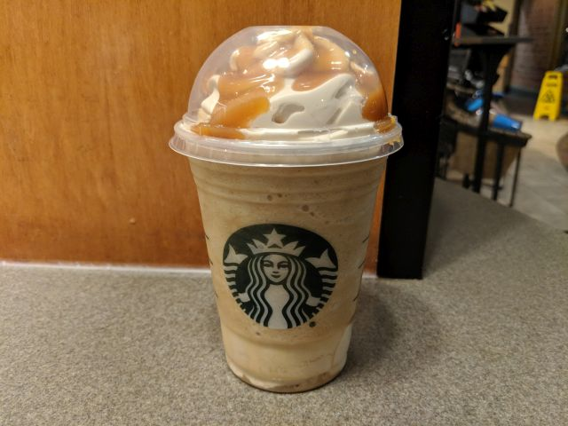

Starbucks® Caramel Frappuccino Copycat Recipe

Description
This is my copycat version of the popular Starbucks Caramel Frappuccino®! Top each glass with whipped cream and drizzle additional caramel over the whipped cream. Serve with a straw. Leftovers keep well in the refrigerator!
Ingredients
- 2 cups ice
- 1 cup strong brewed coffee, cooled
- 1 cup low-fat milk
- ⅓ cup caramel sauce
- tablespoons white sugar
Steps
- Blend ice, coffee, milk, caramel sauce, and sugar together in a blender on high until smooth. Pour drink into two 16-ounce glasses.